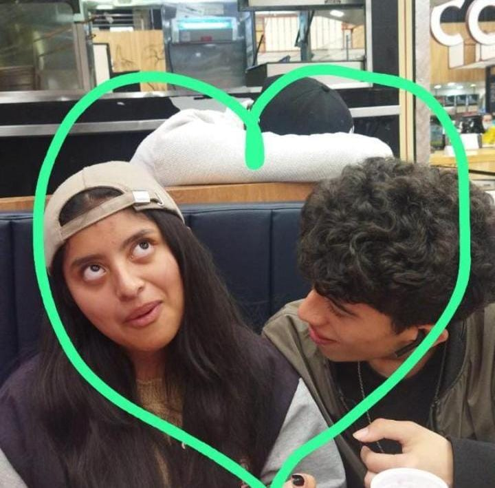
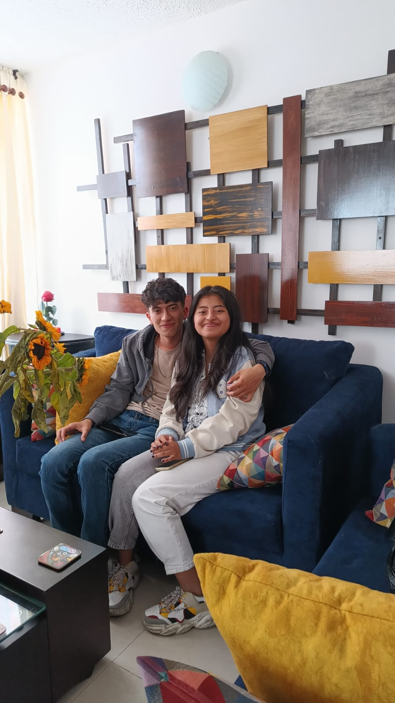
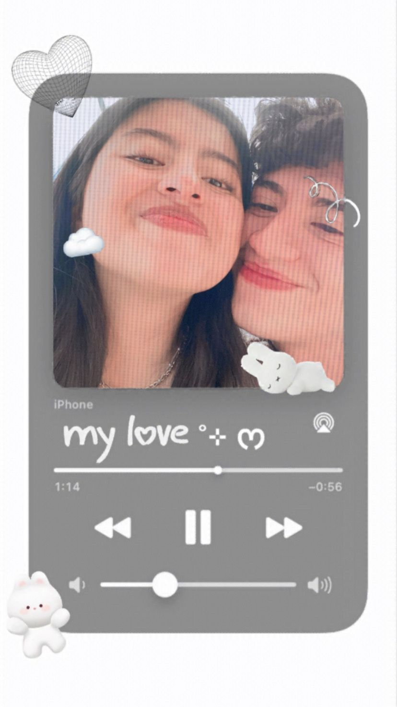
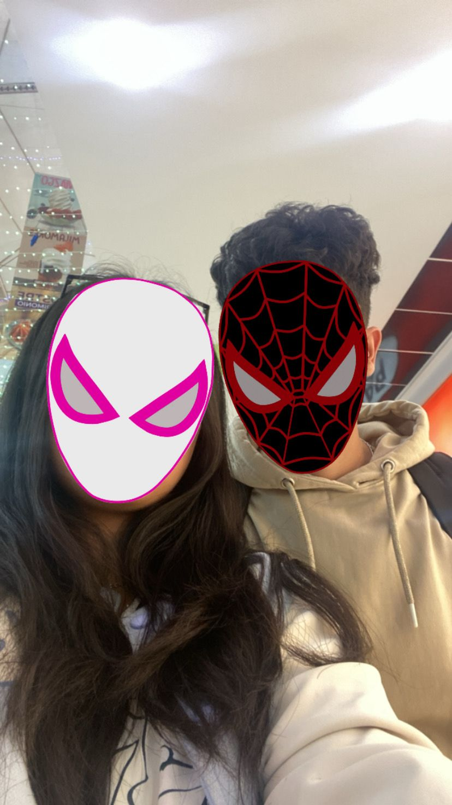
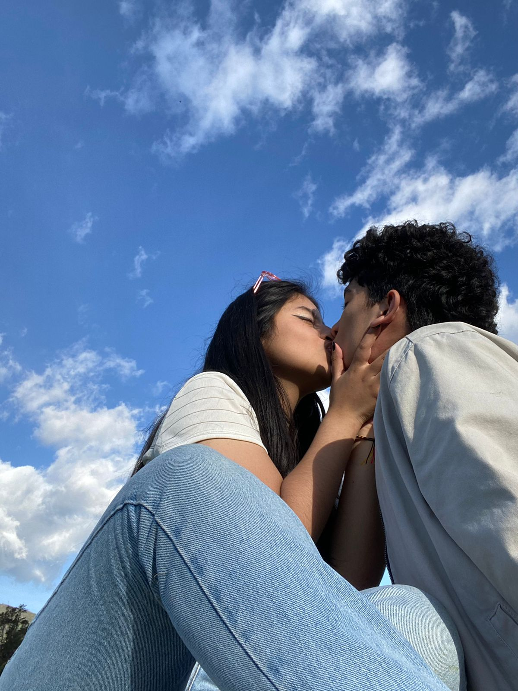

Nuestra historia :3
Un breve repaso por nuestra histora :)
Agosto y septiembre
Aquí empezó todo, en esta época recién nos conocimos, recuerdo que solo hablabamos por Instagram, estábamos muy hornys AJAJAJJA y estábamos muy eufóricos, recuerdo que yo te decía que íbamos muy acelerados, que no estaba bien y que con el tiempo íbamos mirando y tú te emputabas JAJAJAJA. Recuerdo también que un día pensaste que yo estaba bravo contigo y tú después te pusiste brava AJAJAJ que rabia me dió ese día, nos estabamos conociendo, aprendiendo como era cada persona en determinada situación. Empezaron los primeros problemas pero los solucionamos :). Hasta que llegó el día que salimos al centro, yo íba con la intención de que hablaramos de nosotros, el famoso ¿Al fin qué somos?, yo me sentía listo para iniciar la relación y quería hablar contigo para ver que pensabas, si estabas lista(Ella presionandome desde hace mes y medio con eso), para ver que no te gustaba y que te gustaba de nosotros. En fin hablamos, nos cuadramos y pues me terminaste(aunque no lo quieras aceptar) a los 5 minutos. Recuerdo que me emputé mucho ese día y era re loco porque el transmilenio no pasaba ya que era festivo y era mi segunda vez en transmilenio JAJAJA (la primera fue ese día xd), desde Bosa hasta mi casa, al final, casi me roban y me tocó correr(estaba en videollamada con Santiago y fue re random xd), fue un día lleno de emociones AJAJAJ y al siguiente tú querías hablar algo conmigo(aún no se que es) pero escuchaste como yo me expresaba de ti con Samuel y después me hiciste show hasta que me dijiste que te fastiaba que hayan tantas complicaciones para que estemos juntos y yo re 🧍♂️ y nos cuadramos. Era algo que a pesar de que sabiamos que iba a pasar, nos emocionamos resto.



Octubre
Siguiendo la historia, ese día nos cuadramos y empezamos a hablar de reglas en la relación(No las recuerdo xd), pasó el tiempo y realmente todo fue muy bonito hasta que hubo otro problema🙄. En fin xd lo solucionamos y todo re bien.
Noviembre - Primer mes
Este día fue muy especial, fue nuestro primer mes, y no sé porque pero dijimos que íbamos a celebrar todos los meses de aquí en adelante, puede sonar ridículo(Hasta se nos rieron diciendo que quién celebra un mes xd) pero para mi si es importante ya que es celebrar un mes más de relación con mi pareja (Encima que nosotros a duras penas durabamos un mes en relaciones anteriores) y lo veo simplemente como una salida normal, pero celebrando el mes. Recuerdo que fuimos a comer sushi pero casi no nos gustó, igualmente la pasamos muy bien :3.


Diciembre - segundo mes
En este mes hubo complicaciones xd, porque yo no me sentía tan bien en la relación y pues ahí hablé contigo(me faltó más comunicación lo sé), pero ninguno de los dos dijo algo importante, entonces "arreglamos" y pues yo me sentía bien superficialmente hasta que salimos a celebrar el mes y me sentí increíble, fue hermoso😭, al día siguiente salimos con tus papás y fue un día muy especial porque nunca te había visto tan feliz y eso me hizo extremadamente feliz, ese día fue la primera vez que te dije te amo.
Enero - Tercer mes
Aquí no teniamos planeado nada, pero en un pdf de citas que me compartiste pues estaba un plan que queríamos hacer desde hace resto y era un picnic, entonces yo dije ¿Por qué no? y pues literal el mercado para mi, lo dejé para el picnic y así tener más plata para otra cosa xd, fue chistoso porque yo ya tenía todo planeado pero ni te había contado y me escribiste haciendome show para que lo planearamos JAJAJA. Luego el 17 yo ni tenía la sábana y no alcanzaba por los tiempos, entonces recurrí a llevar puras camisas AJAJAAJ, nos vimos y el pinche bus no pasaba, que rabia pero al final llegamos, fue un lío conseguir la comida extra ya que no teníamos tanto dinero pero resolvimos, fuimos al parque, preparamos todo y fue hermoso porque sentí mucha paz contigo y siento que de vez en cuando tener un espacio así es necesario y bonito :3
